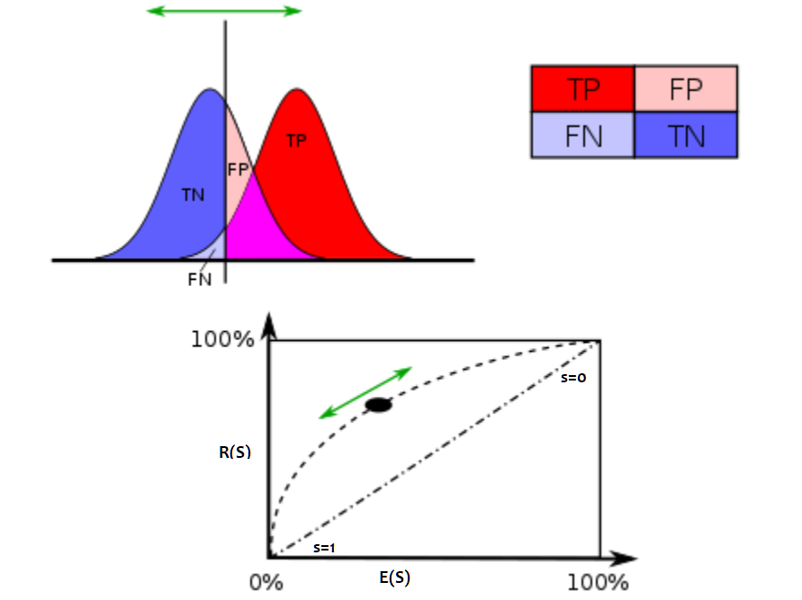
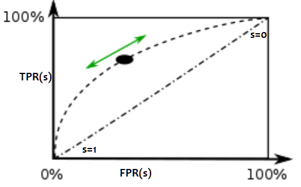

Courbe ROC#
Ce document introduit la courbe ROC
(Receiving Operator Characteristic) qui est communément utilisée pour mesurer
la performance d’un classifieur. Il introduit aussi des termes comme précision,
rappel, AUC,
qui sont présents dans la plupart des articles qui traitent de machine learning.
Le module roc implémente les calculs ci-dessous
qu’on peut tester avec le notebook suivant :
Définitions#
Supposons que nous avons un classifieur qui classe des observations en un ensemble de classes. De plus, il donne cette réponse accompagnée d’un score de pertinence. Deux cas sont possibles : soit la réponse est bonne (1), soit la réponse est fausse (0). Pour chaque observation, on associe un couple \((r,x)\) où \(r\) est égal à 0 ou 1. \(x\) est le score de pertinence. On cherche à déterminer à partir de quel seuil de pertinence, la réponse du classifieuur est fiable. En faisant varier \(x\), on obtient une courbe (source : wikipedia) :

Cette courbe sert également à comparer différents classifieurs. Plus une courbe a des valeurs élevées, plus l’aire sous la courbe est grande, moins le classifieur fait d’erreur.
D’une manière simplifiée, le classifieur retourne une réponse qui est soit mauvaise (-) soit bonne (+). On peut l’évaluer car pour construire un classifier on dispose toujours d’une base contenant les réponses attendues. En fonction du score \(x\) et d’un seuil \(s\), on définit quatre cas :
cas |
réponse prédite est bonne (+) |
réponse prédite est mauvaise (-) |
|---|---|---|
\(x \supegal s\) |
TP: vrai (true) positif |
FP: faux positif |
\(x < s\) |
TN: vrai (true) négatif |
FN: faux négatif |
Ces résultats sont souvent présentés selon une matrice confusion :
réponse attendue |
0 |
1 |
|---|---|---|
0 |
TN |
FP |
1 |
FN |
TP |
A partir de ces définitions, on définit :
la précision : \(\frac{ TP }{ TP + FP }\)
le rappel ou recall : \(\frac{ TP }{ TP + TN }\)
En choisissant un seuil relatif au score de pertinence \(x\), au-dessus, on valide la réponse du classifieur, en-dessous, on ne la valide pas. On peut toujours calculer la précision et le rappel pour toutes les réponses dont le score est au-dessus d’un seuil \(s\). La courbe ROC s’obtient en faisant varier \(s\).
Définition D1 : Courbe ROC
On suppose que \(Y\) est la variable aléatoire des scores des expériences qui ont réussi. \(X\) est celle des scores des expériences qui ont échoué. On suppose également que tous les scores sont indépendants. On note \(F_Y\) et \(F_X\) les fonctions de répartition de ces variables. \(F_Y(s)=\pr{Y \infegal s}\) et \(F_X(s)=\pr{X \infegal s}\). On définit en fonction d’un seuil \(s \in \R\) :
\(R(s) = 1 - F_Y(s) = \pr{Y > s}\)
\(E(s) = 1 - F_X(s) = \pr{X > s}\)
La courbe ROC est le graphe \(\pa{E(s),R(s)}\) lorsque \(s\) varie dans \(\R\).
\(TP(s)\) désigne les true positifs au-dessus du seuil \(s\), avec les notations TP, FP, FN, TN, cela revient à :
On remarque que \(\forall s, \; TP(s) + TN(s)\) est constant. De même pour \(FP(s) + FN(s)\).
On remarque que les fonctions \(s \longrightarrow E(s)\) et \(s \longrightarrow R(s)\) sont décroissantes toutes deux. Elles sont donc inversibles. Dans le cas où la variable aléatoire \(\theta\) est indépendante de la variable \(X\), la courbe ROC est une droite reliant les points \((0,0)\) et \((1-p,p)\) où \(p = \pr{\theta=1}\). Ceci signifie que la connaissance du score \(X\) n’apporte pas d’information quant à la réussite de l’expérience.
Il peut paraître complexe de distinguer la réponse et le score du classifieur. C’est pourtant nécessaire dans le cas où le classifieur retourne un entier qui désigne une classe parmi \(n\). Un cas positif est lorsque la classe prédite est égale à la classe attendue, il est négatif dans le cas contraire. La courbe peut être adaptée pour d’autres problèmes tels que le ranking (voir [Agarwal2005]).
Une autre façon de l’exprimer car je ne retiens jamais la définition des FP, TP, FN, TN… Pour quelqu’un qui doit réfléchir trois secondes à chaque fois qu’on me demande où est la gauche, ce n’est jamais évident.
x = FPR(s), y = TPR(s). (FPR = False Positive Rate, TPR = True Positive Rate)
Aire sous la courbe#
Expression#
L’aire sous la courbe (AUC) correspond à l’intégrale de la fonction ROC. Elle se calcule à partir du théorème suivant :
Théorème T1 : Aire sous la courbe (AUC)
On utilise les notations de la définition de la Courbe ROC. L’aire sous la courbe ROC est égale à \(\pr{ Y > X}\).
Rappel
Soit \(X\) une variable aléatoire de densité \(f\) et de fonction de répartition \(F\). Si \(U = F(X)\), alors :
La variable \(U\) est de loi uniforme sur \(\cro{0,1}\). De plus, soit \(g\) une fonction intégrable quelconque, on pose \(u = F(x)\) et :
Démonstration
On note \(f_X\) la densité de la variable \(X\) et \(f_Y\) celle de la variable \(Y\). On peut alors définir la probabilité \(\pr{ Y > X}\) par une intégrale :
On note \(F_X\) la fonction de répartition de \(X\) soit \(F_X(x) = \int_{-\infty}^x f_X(u)du\). On pose comme changement de variable : \(u = F_X(x)\). On en déduit que \(du = f_X(x) dx\). La variable aléatoire \(U = F_X(X)\) est uniforme et comprise dans \(\cro{0,1}\).
Or si \(u = F_X(s) = E(s)\), alors \(F_X^{-1}(u) = s\) et \(\pr{Y > F_X^{-1}(u)} = R'(s)\). Par conséquent :
Cette dernière expression est l’aire recherchée. Ce théorème nous permet de définir un estimateur pour l’aire sous la courbe ROC à l’aide des U-statistiques de Mann-Whitney (voir [Saporta1990]).
Corollaire C1 : Estimateur de l’aire sous la courbe ROC
On dispose des scores \(\vecteur{Y_1}{Y_n}\) des expériences qui ont réussi et \(\vecteur{X_1}{X_m}\) les scores des expériences qui ont échoué. On suppose également que tous les scores sont indépendants. Les scores \((Y_i)\) sont identiquement distribués, il en est de même pour les scores \((X_i)\). Un estimateur de l’aire \(A\) sous la courbe ROC” est :
Démonstration
La démonstration est évidente :
Dans le cas où \(X\) ou \(Y\) sont continues, \(\pr{X=Y} = 0\).
Intervalles de confiance#
Il est possible de déterminer un intervalle de confiance pour cet estimateur. Le théorème central limite nous permet de dire que cet estimateur tend vers une loi normale lorsque \(n\) et \(m\) tendent vers l’infini.
Corollaire C2 : Variance de l’estimateur AUC
On note \(P_X = \pr{ X < \min\acc{Y_i,Y_j }}\) et \(P_Y = \pr { \max\acc{X_i,X_j} < Y}\). \(X_i\) et \(X_j\) sont de même loi que \(X\), \(Y_i\), \(Y_j\) sont de même loi que \(Y\). La variance de l’estimateur \(\hat{A}\) définie par (1) est :
Démonstration
Cette démonstration n’est vraie que dans le cas continu. Par conséquent, \(\pr{X=Y} = 0\). On calcule tout d’abord \(\esp{\hat{A}^2}\) et on utilise le fait que \(\var{\hat{A}} = \esp\pa{\hat{A}^2} - \hat{A}^2\).
On en déduit que :
On retrouve l’expression cherchée.
Intervalles de confiance sur la courbe#
Les systèmes de reconnaissance sont souvent ajustés de telle manière que le taux d’erreur soit constant, par exemple 1%. C’est la proportion de documents reconnus qui détermine la performance de ce système. L’objectif ce paragraphe est de déterminer un intervalle de confiance du taux de reconnaissance pour un taux d’erreur fixé.
Construction de la courbe ROC#
Ce premier paragraphe détaille la manière dont est construite une courbe ROC (voir Courbe ROC).
Algorithme A1 : Calcul de la courbe ROC
On suppose qu’on dispose d’un ensemble de points \(\pa{X_i,\theta_i} \in \R \times \acc{0,1}\) pour \(i \in \ensemble{1}{n}\). X_i est le score obtenu pour l’expérience \(i\), theta_i vaut 1 si elle a réussi et 0 si elle a échoué. On suppose également que cette liste est triée par ordre croissant : forall i, ; X_i infegal X_{i+1}. On souhaite également tracer \(k\) points sur la courbe, on détermine pour cela \(k\) seuils ensemble{s_1}{s_k} définis par : \(\forall j, s_k = X_{\frac{j \, k}{n}}\).
On construit ensuite les points \(\pa{R_j,E_j}\) définis par :
La courbe ROC est composée de l’ensemble \(R_{OC} = \acc{ \pa{E_j,R_j} | 1 \infegal j \infegal k}\).
Les deux suites \((R_j)_j\) et \((E_j)_j\) sont toutes les deux décroissantes d’après leur définition. La courbe peut être rendue continue par interpolation.
Définition D2 : taux de classification à erreur fixe
On cherche un taux de reconnaissance pour un taux d’erreur donné. On dispose pour cela d’une courbe ROC obtenue par l’algorithme de la courbe ROC et définie par les points \(R_{OC} = \acc{ \pa{e_j,r_j} | 1 \infegal j \infegal k}\). On suppose ici que \(\pa{e_1,r_1} = \pa{1,1}\) et \(\pa{e_k,r_k} = \pa{0,}\). Si ce n’est pas le cas, on ajoute ces valeurs à l’ensemble \(R_{OC}\).
Pour un taux d’erreur donné \(e^*\), on cherche \(j^*\) tel que :
Le taux de reconnaissance \(\rho\) cherché est donné par :
Il ne reste plus qu’à détailler la méthode bootstrap.
Méthode boostrap#
Une seule courbe ROC ne permet d’obtenir qu’un seul taux. On cherche ici à construire plusieurs courbes ROC à partir de la même expérience de façon à obtenir plusieurs taux de reconnaissance pour le même taux d’erreur. De cette manière, il sera possible de déterminer un intervalle de confiance. On s’inspire pour cela des méthodes de bootstrap.
Algorithme A2 : Courbe ROC, méthode boostrap
On dispose toujours du nuage de points \(E = \pa{X_i,\theta_i} \in \R \times \acc{0,1}\) avec \(i \in \ensemble{1}{n}\). On choisit \(C \in \N\) le nombre de courbes ROC qu’on désire tracer. Pour chaque courbe \(c \in \ensemble{1}{C}\) :
On construit un nouvel ensemble \(\pa{X'_i,\theta'_i}_{1 \infegal i \infegal n}\) construit par un tirage aléatoire dans l’ensemble \(E\) avec remise.
L’algorithme de la courbe ROC permet de constuire la courbe \(R_{OC}^k\).
L’algorithme de taux de classification à erreur fixe permet ensuite de déterminer un taux de reconnaissance \(\rho_k\) pour le taux d’erreur \(e^*\).
La liste \(\vecteur{\rho_1}{\rho_C}\) est triée par ordre croissant. Les quantiles sont ensuite utilisés pour déterminer l’intervalle de confiance \(\cro{\rho_1,\rho_2}\) du taux de reconnaissance pour le taux d’erreur \(e^*\) de telle sorte que :
On prend généralement \(\alpha = 0.05\).
Cet algorithme aboutit aux résultats suivants :


La première image est celle d’une courbe ROC (l’axe des abscisses est inversé), la seconde représente toutes celles obtenues par la méthode bootstrap pour trois courbes. La troisième image superpose cent courbes. Moins il y a de points pour estimer une partie de la courbe, plus les courbes sont espacées. Ces courbes ont été construites avec 12000 points. Le taux de lecture pour 1% d’erreur est égal à 68,09%. L’intervalle de confiance à 95% est [66,10%; 70,16%] (construit avec 500 courbes). Moyenne (68,25) et médiane (68,12) sont sensiblement égales au taux calculé sur la première courbe construite sans tirage aléatoire. L’écart-type est \(1,10\), cela donne un intervalle de confiance équivalent au précédent si on considère que la moyenne des taux suit asymptotiquement une loi normale. Cette expérience a été reproduite plusieurs fois et ces bornes sont assez stables contrairement (pm 0,05 %) aux extremas (pm 1%).
Aire sous la courbe et intervalles de confiance#
La méthode bootstrap peut elle aussi être appliquée pour calculer un intervalle de confiance pour l’aire sous la courbe (AUC).

Courbe ROC (l’axe des abscisse est inversé) obtenue pour 100 tirages aléatoires. L’aire sous la courbe est égale à 0.80 et l’intervalle de confiance à 95% mesurée par la méthode bootsrap est : \(\cro{0.79 , \; 0.80}\). Les extremas sont presque identiques à ces chiffres.
Distribution des scores mauvais et bons#
On appelle un mauvais score un score associé à un mauvais résultat, de même, un bon score est le score d’un bon résultat. Si le score est une probabilité, on s’attend à trouver les bons scores regroupés autour de la valeur 1. Si le score est un mauvais score, il devrait être plus proche de zéro. La figure qui suit montre des distributions obtenues pour deux problèmes différents. Dans les deux cas, le but recherché est la détermination d’un seuil séparant le score d’un bon résultat de celui d’un mauvais résultat. Lorsque ceci n’est pas possible, le score ne peut correspondre à un quelconque critère confiance.

{kind=link}
{kind=link}
{kind=link}
{kind=link}
{kind=link}
La première courbe montre deux distributions qui se chevauchent même si les bons scores semblent plus concentrés autour des grandes valeurs. Le seconde courbe montre un problème mieux séparable. L’existence d’un seuil entre un bon et un mauvais score est plus plausible.
Variantes#
Taux de lecture ou de reconnaissance#
Il n’existe pas une grande différence lorsque le taux d’erreur est faible. Le taux de lecture est simplement la proportion de documents pour lesquels le score est aussi d’un seuil \(s\) que la réponse du classifieur soit bonne ou mauvaise. Par exemple, pour un taux de substitution de 1%, si on a 70% en taux de lecture, cela signifie que sur 100 documents, le système va en accepter 70 et parmi ces 70, 1% seront mal traités. Le taux de substitution est un taux d’erreur rapporté à un taux de lecture donné. L’inconvénient du taux de lecture rapporté au taux de substitution est que la méthode développée au paragraphe Intervalles de confiance sur la courbe ne s’applique plus aussi bien car pour un taux de substitution donné, il peut exister plusieurs taux de lecture.
{kind=link}
{kind=link}
La première image montre 5 courbes taux de lecture / taux de substitutions. Les courbes ne sont pas monotones et montre qu’il existe parfois plusieurs taux de lecture pour un même taux de substitution. Comme le calcul des intervalles de confiance fait intervenir une interpolation linéaire, lorsque les courbes sont trop cahotiques, le calcul retourne des valeurs fausses.
On peut démontrer que la courbe taux de lecture / taux de substitution n’est pas une courbe ni monotone ni inversible. Pour cela on dispose d’une suite de couple \(\pa{X_i, \theta_i}\) croissante selon les \(X_i\). \(\theta_i\) vaut 1 si l’expérience a réussi, 0 sinon. Pour un seuil donné \(s\), on note \(E'(s)\) le taux de substitution et \(R'(s)\) le taux de lecture, on obtient :
On écrit différemment ces expressions en supposant que \(X_{i(s_1)-1} < s_1 \infegal X_{i(s_1)} :math:\) :
On suppose maintenant que \(X_{i(s_2)-1} < s_2 \infegal X_{i(s_2)} :math:\) et \(i(s_1) +1 = i(s_2)\) :
Si on suppose que \(\theta_{i(s_1)}=1\), autrement dit, l’expérience \(s_1\) a réussi, on en déduit que :
En revanche si \(\theta_i = 0\) :
Il n’existe donc pas toujours une fonction \(f\) reliant \(R'(s)\) à \(E'(s)\) à moins de construire cette courbe de telle sorte qu’elle soit monotone en ne choisissant qu’une sous-suite \(\pa{E'(X_i), R'(X_i)}_i\) qui vérifie cette hypothèse.
Classification multi-classe#
Une courbe ROC se construit avec deux informations : une réponse binaire et un score. Que signifie cette réponse binaire ? Elle peut être :
Le fait que le prédicteur ait bien prédit une classe en particulier. Le score associé est celui que le prédicteur donne pour cette classe.
Le fait que le prédicteur ait bien prédit, c’est-à-dire que la réponse binaire signifie que la classe prédite est la classe attendue, le score associé est celui de la classe prédite, c’est-à-dire le score maximum obtenu pour l’une des classes.
Plus formellement, le prédicteur retourne un vecteur \(S_i\) qui contient les probabilités d’appartenance à toutes les classes aussi appelées plus généralement score de confiance ou juste score. \(S_i(c)\) est la probabilité de prédire la classe \(c\). La classe attendue est notée \(y_i\), c’est celle que le prédicteur doit prédire. Dans le premier cas, on construit le couple \((b_i, s_i)\) de telle sorte que :
Dans le second cas :
Le premier cas correspond par exemple à des problèmes de détection de fraude. Le second cas correspond à taux de classification global. La courbe ROC pour ce cas est en règle général moins bonne que la plupart des courbes ROC obtenues pour chacune des classes prise séparément (voir Régression logistique).
Exemple#
Generalization Bounds for the Area Under the ROC Curve (2005), Shivani Agarwal, Thore Graepel, Ralf Herbich, Sariel Har-Peled, Dan Roth Journal of Machine Learning Research, volume 6, pages 393-425
Probabilités, analyse des données et statistique (1990), Gilbert Saporta, Editions Technip